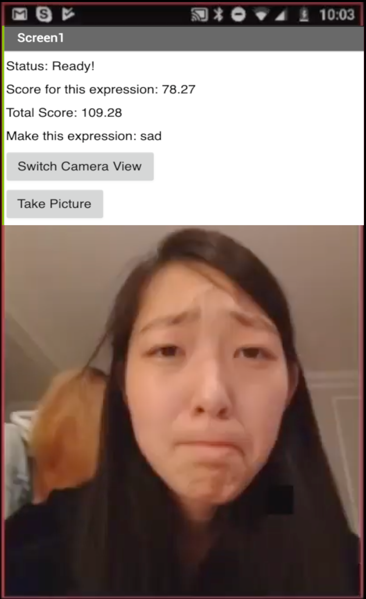
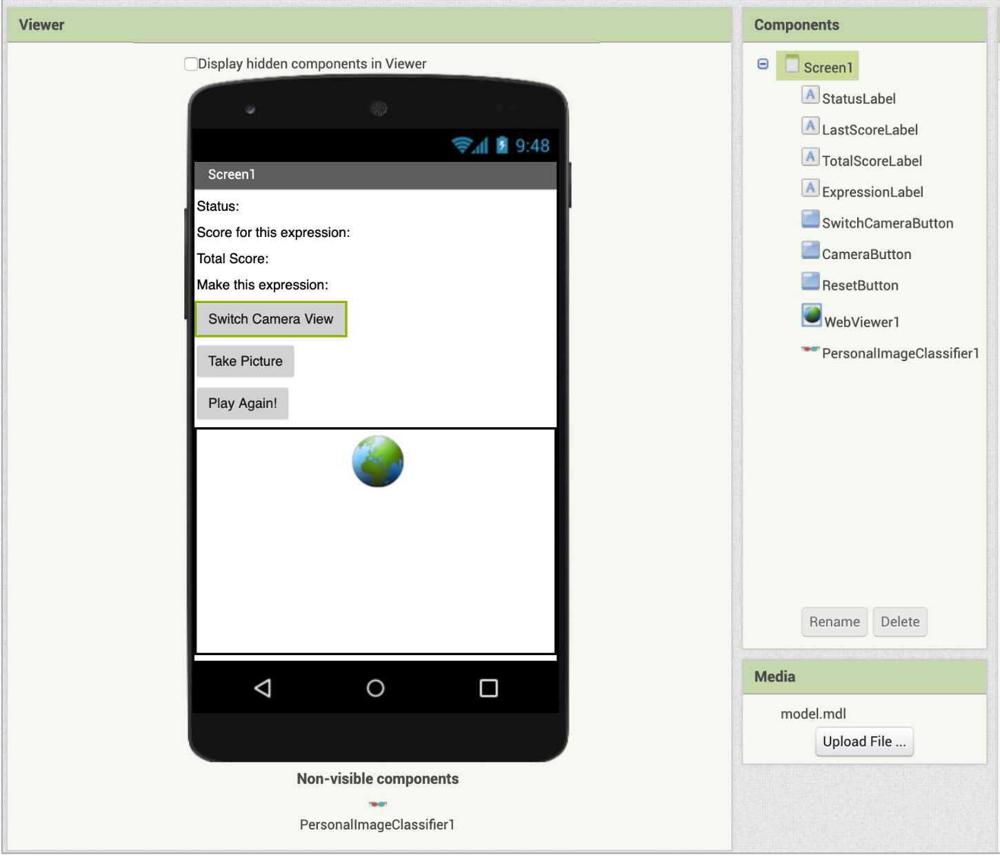
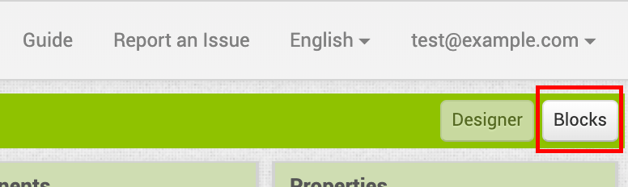
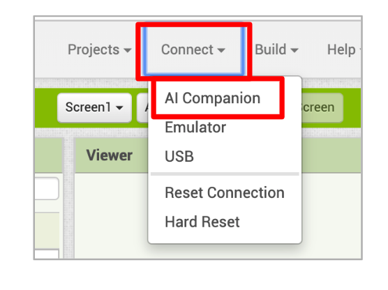

About this Tutorial
This tutorial is Part 3 of the Personal Image Classifier tutorials. In this tutorial, you will use the model you trained in Personal Image Classifier Part 1 to make a game app where the user has to try to match the given facial expression to gain points.
Each of the labels in your trained model will be displayed, one at a time, and the user will be asked to match that facial expression. The user will gain points based on the returned confidence level for their image against the model. For example, in the image above, the user matched "happy" with a confidence level of 78.27% so she scored 78.27 points.
See how high you can score by matching the displayed expression!
NOTE: The Personal Image Classifier extension will not work on all mobile devices. Follow Steps 1-3 of the tutorial to see if your mobile device's hardware is sufficient to make this app.Connect your App
Expression Match Tutorial
1. Build the UI
You will first build the UI for the app in the Designer. Below is what the UI should look like. Also note the list of components, and the name given them. Those names will be used throughout the tutorial, so make sure you name your components as shown.
First, add the Labels and Buttons, and set their properties.


Then add the PersonalImageClassifer and WebViewer components.
Set the WebViewer in the PersonalImageClassifier properties, and upload the model trained in Part 1 as the model for the PersonalImageClassifier.
2. Start Coding
Switch to the Blocks Editor by pressing the Blocks button in the top right corner of your screen.
Code the PersonalImageClassifier1.ClassifierReady event, which is triggered when the Classifier is ready to start classifying images. Display the status as "Ready!" in StatusLabel.
Also code the PersonalImageClassifier1.Error event, which is triggered if there is an error with the Classifier. Display the error returned in StatusLabel.
3. Try the app!
It's a good time to stop and test that the PersonalImageClassifier extension works on your mobile device. Under the Connect menu, choose AI Companion. Start the companion app on your device, and scan the QR code when it appears on your computer. You should see the status label change to “Status: Ready!” when the model is done loading.
Note: if you do not get the "Ready!" status, the PersonalImageClassifier extension may not work correctly with your device.
4. Set up scoring
Initialize the last score and total score to 0, and display these scores in LastScoreLabel and TotalScoreLabel in the PersonalImageClassifier1.ClassifierReady event.
5. Get model labels
You need to get the list of labels (expressions) that you trained in your model, so you can use ask the user to match the expressions in the game. Call PersonalImageClassifier1.GetModelLabels from the ClassifierReady event block.
GetModelLabels triggers an event, LabelsReady, once the Classifier returns the labels. In that event block, the result returned is the list of model labels. Store the result in a variable so you can use it in the game.
This is also a good place to make the SwitchCameraButton and CameraButtons visible for the start of game play.

6. Make playGame procedure
Now you want to select an expression from your model labels list and display it for the user, so they know what expression they need to match. Since you will do this repeatedly, it might makes sense to make a procedure, called playGame. Then add a call to playGame from the LabelsReady event block.
7. Code Game Buttons
Code the SwitchCameraButton.Click event block to change the direction of the camera. And also code CameraButton.Click to classify an image.
8. GotClassification
You want to check if the user matched the correct expression, which you can do in the PersonalImageClassifier1.GotClassification event.
The GotClassification event is triggered after an image is classified (when you call ClassifyVideoData).
The classification results are a list of lists with what the Classifier thinks the image is. Each sublist contains two items - the guess, and the confidence level. For example:
[[Smile 0.8]
[Surprised 0.2]
[Sad 0.1]]
In GotClassification
- Reset the player’s last expression score to 0.
- Iterate through the classification results to see if the current label is in the result list.
- If there is a match, update the last score and total score by the matching confidence level X 100.
- Display the score for this expression in LastScoreLabel and the total score in TotalScoreLabel.
9. Check for more labels
Check if there are more labels (expressions) in the model. If so, prompt the player to match the next expression by calling playGame. Otherwise, end the game by hiding SwitchCameraButton and CameraButton, making ResetButton visible, and displaying a message that the game is over in ExpressionLabel.
10. ResetButton
Finally, add functionality to the ResetButton. When the player clicks on it, reset the state of the game so that the player can start over.
This includes making the camera buttons visible, hiding this button, resetting the index and score variables, resetting the score text labels, and calling playGame at the end.
11. Test your game!
That’s it! Connect to the AI Companion and try playing the game you just made and see how high of a score you can get. Also, try letting other people play your version of the game! What happens?
12. Expand your app
Here are some ideas to expand or update your app:
- Add more labels (expressions) to your model by going back to classifier.mit.edu. Update the model in your app with your updated model.
- You can also go back to the Classifier interface to train entirely different models. Make it a game to correctly identify objects instead of expressions.
- If a user scores below 50% on an expression, give them another try at matching the expression.
- Save a high score for the app in TinyDB and display the high score.
What other ideas to you have?